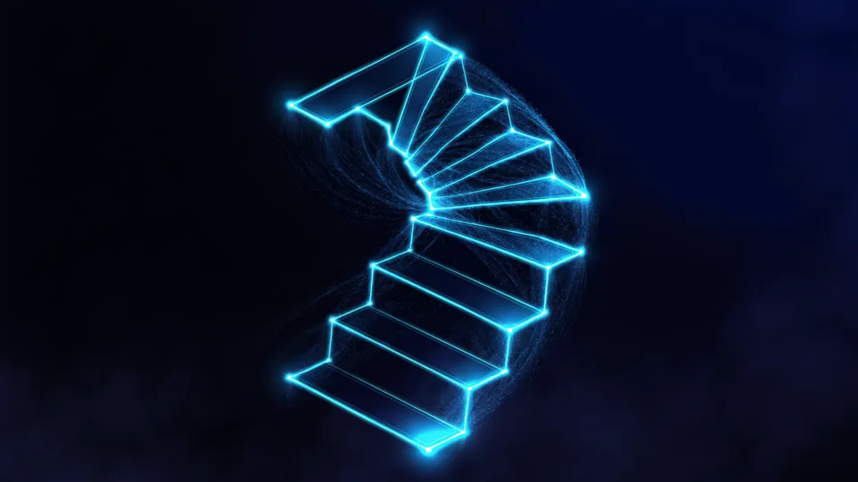

Uygulama Mağaza Optimizasyonu Nedir, Neyi Değiştirir?
Mağaza optimizasyonu, uygulamanızın App Store ve Google Play sayfasını arama ve dönüşüm için düzenleme işidir. İki şeyi birden etkiler: aramada kaçıncı sırada göründüğünüzü ve sayfayı görenlerin kaçının indirdiğini. İkincisini çoğu ekip tümüyle atlar. Oysa indirme oranı sıralamadan daha hızlı iyileşir. Üstelik kod değişikliği gerektirmez.
İki ayrı kazanç kapısı var ve ikisi farklı çalışır. Sıralama, aramada bulunmanızı sağlar; indirme oranı ise bulunduktan sonra seçilmenizi. Ekiplerin çoğu yalnız birinciyle ilgilenir.
Mağaza sayfası çalışması bu yüzden iki koldan yürür. Metin tarafı aramayı, görsel tarafı kararı etkiler. İkisini ayrı ayrı ölçmezseniz hangisinin işe yaradığını göremezsiniz.
Bu iş çoğu ekipte kimsenin sahibi olmadığı bir alanda kalır. Geliştirici kod tarafına, pazarlamacı reklama bakar; mağaza sayfası ortada kalır. Oysa uygulama mağaza optimizasyonu haftada bir saatlik bir sahiplik ister, daha fazlasını değil.
Bu İş Ne Sıklıkla Tekrarlanmalı?
Ayda bir kısa tur yeter. Uzun aralarla yapılan büyük değişiklikler, neyin işe yaradığını ölçmeyi imkânsız kılar. Küçük ve sık değişiklik, mağaza optimizasyonunu ölçülebilir bir işe çevirir.
Mağaza Sayfasında Hangi Alanlar Sıralamayı Etkiler?
Üç alan ağır basar: başlık, alt başlık ve anahtar kelime kutusu. Google Play tarafında uzun açıklama da tarama kapsamına girer, App Store'da girmez. Bu farkı bilmeyen ekipler aynı metni iki mağazaya kopyalar. Mağaza optimizasyonu bu noktada iki ayrı iş olarak yürür, tek iş olarak değil.
Başlık en değerli alandır ve yeri dardır. Marka adının yanına ürünün ne yaptığını söyleyen iki üç kelime koyun. “Uygulama” ya da “mobil” gibi genel sözcükler yer israfıdır.
Arama ifadelerini seçerken kendi tahminlerinize güvenmeyin. Kullanıcının hangi sözcükle aradığını ölçmenin yolunu anahtar kelime araştırması yazısında anlattık. Optimizasyon çalışması mağaza tarafında da aynı disiplinle yürür.
Alt başlık ve kısa açıklama alanlarını da boş bırakmayın. İkisi de aramaya girer ve çoğu üründe eksik kalır. Rakip sayfalara bakmak da işe yarar; onların hangi ifadeleri seçtiği kendi listenize fikir katar. Mağaza optimizasyonu bir kopyalama işi değildir ama boşlukları görmenin en hızlı yoludur. Alan uzunlukları tahminle değil kuralla belli; App Store ürün sayfası kılavuzu sınırları yazar.
Aynı Kelimeyi İki Alana Yazmalı mıyım?
Hayır, tekrar yer kaybettirir. Başlıkta geçen bir sözcüğü anahtar kelime kutusuna yeniden yazmayın. Boşalan yeri başka bir arama ifadesiyle doldurmak, mağaza optimizasyonunun en ucuz kazancıdır.
Görseller İndirme Oranını Nasıl Değiştirir?
İlk iki ekran görüntüsü kararı verir, çünkü kullanıcı listede yalnız onları görür. Kullanıcı metni okumadan görseli görür. Bu yüzden ilk kareye ürünün ne yaptığını yazarız, güzel bir ekran değil. Simge de aynı listede küçücük görünür; ayrıntı değil siluet çalışır. Mağaza optimizasyonunda en hızlı kazanç buradan gelir.
Tanıtım karesi bir ekran görüntüsü değil, bir cümledir. Üstüne kısa bir başlık koyun ve o başlık bir yarar söylesin. Ekranın kendisi arka planda kalabilir; okunması gereken şey vaattir.
Uygulama ikonunu tasarlarken küçük boyutta deneyin. Masaüstünde güzel duran birçok simge, listede tanınmaz hâle gelir. Karanlık ve aydınlık temada ayrı ayrı bakmak da alışkanlık olmalı.
Karelerin sırasını da düşünün. En güçlü vaadi başa koyun, ikinciye onu tamamlayanı. Geri kalanlar sayfayı açan meraklı kullanıcı için kalsın.
Video Koymak Şart mı?
Şart değil, ama akışı anlatması zor ürünlerde işe yarar. Videoyu ilk saniyeden anlaşılır kurun; kimse tanıtımı sonuna kadar izlemez.
Yorumları ve Puanları Nasıl Yönetirsiniz?
Puan ortalaması sıralamayı da indirme kararını da etkiler. En etkili yol, yorumlara yanıt vermektir; yanıt gören olumsuz yorumların bir kısmı sonradan yumuşar. Puan istemeyi de doğru ana bağlayın: kullanıcı işini bitirdikten sonra sorun, uygulamayı açar açmaz değil. Zamanlama tek başına ortalamayı yükseltir.
Yıldız ortalaması düşükse önce nedenini okuyun. Yorumların çoğu aynı üç sorunu işaret eder; o üçünü çözmek ortalamayı kendiliğinden toparlar. Yanıt yazarken savunmaya geçmeyin, ne yapacağınızı söyleyin.
Sürüm notlarını da boş geçmeyin. “Hata düzeltmeleri” yazan bir not kimseye bir şey anlatmaz. Neyi düzelttiğinizi yazmak, yorum bırakan kullanıcıya karşılık vermenin en ucuz yoludur.
Düşük puan veren kullanıcıya doğrudan ulaşmanın yolu yoktur, ama sürüm notu bir yanıt yeridir. Şikâyet konusu olan sorunu düzelttiğinizde bunu notta açıkça yazın. Bazı kullanıcılar geri dönüp puanını yükseltir; bu, mağaza optimizasyonunun en az görünen ama en kalıcı kazancıdır.
“Mağaza sayfası bir vitrin değil, bir eşiktir. Aramada bulunmak sizi kapıya getirir; içeri girmeye ilk iki kare ikna eder.”
— TasarımMania uygulama pazarlaması notu
Sekiz Adımlık Uygulama Rotası
Rota sekiz adımdan oluşur ve sırayla yürür. Önce ölçüm, sonra metin, sonra görsel, en sonda yineleme gelir. Adımları atlayarak ilerleyen ekipler neyin işe yaradığını göremez. Uygulama mağaza optimizasyonu bir kerelik iş değil, ayda bir dönen kısa bir turdur. Turun uzunluğu bir saati geçmez.
Aşağıdaki sırayı bozmayın. Her adım bir öncekinin çıktısını kullanır.
- Mevcut durumu ölçün — gösterim, indirme ve oranı not edin.
- Arama ifadelerini toplayın — kendi tahmininizle değil, veriyle.
- Başlığı yeniden yazın — marka artı iki üç açıklayıcı kelime.
- Alt başlık ve anahtar kutusunu doldurun — tekrar etmeden.
- İlk iki kareyi değiştirin — her birine tek bir vaat yazın.
- Simgeyi küçük boyutta sınayın — siluet tanınıyor mu.
- Puan isteme anını taşıyın — işin bittiği ana bağlayın.
- Bir ay sonra ölçün — yalnız değiştirdiğiniz alana bakın.
Sekizinci adım en çok atlanan adımdır. Ölçmeden yapılan değişiklik, iyileştirme değil tahmindir.
Aynı Anda Kaç Şeyi Değiştirmeli?
Bir turda tek alan. Başlıkla görseli birlikte değiştirirseniz hangisinin işe yaradığını bilemezsiniz. Optimizasyonun ilk kuralı mağaza tarafında da aynıdır: tek değişken, tek ölçüm.
Mağaza Sayfanızı Birlikte Elden Geçirelim
Sayfanızı birlikte elden geçirelim. Başlığı, alt başlığı, ilk iki ekran görüntüsünü ve simgeyi tek oturumda gözden geçiriyoruz. Elinizde bir öneri listesi değil, sıraya konmuş bir iş listesi kalıyor. Mağaza optimizasyonu çoğu üründe kod yazmadan kazanç veren ilk yerdir. Başlamak için yeni sürüm beklemeniz de gerekmez.
Yayın öncesi bir tur, yayın sonrası aylık turlar öneririz. Takvimi geliştirme süreci yazısında anlatmıştık; mağaza sayfası hazırlığı o takvimin son haftasına girer. Uygulama pazarlaması hizmetimizi ve mobil uygulama sayfamızı inceleyebilirsiniz. Bütçeyi hangi kalemlerin belirlediğini uygulama maliyeti yazısında açtık.

İki mağazanın ayrıştığı alanlar
| Alan | App Store | Google Play |
|---|---|---|
| Başlık | Kısa; aramada en etkili alan | Aynı ağırlıkta, ayrı yazılmalı |
| Anahtar kelime kutusu | Var, ayrı alan | Yok |
| Uzun açıklama | Aramaya girmez | Aramaya girer |
| Kısa açıklama | Alt başlık olarak | Ayrı alan, aramaya girer |
| İnceleme süresi | Değişken, ret olağan | Genelde daha hızlı |
Uygulama mağaza optimizasyonu kod yazmadan kazanç veren nadir işlerden biridir. Sekiz adımı sırayla yürütün, her turda tek alanı değiştirin ve bir ay sonra yalnız o alana bakın; ölçmediğiniz değişiklik iyileştirme sayılmaz.